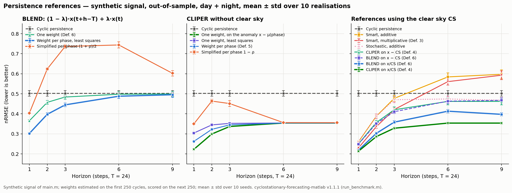

Solar forecasting explained · Published article, open code (v1.1.1)
Why compare a solar forecast with persistence? BLEND and cyclostationary persistence
What does BLEND add?
The study develops analytical reference forecasts that exploit periodic statistics. The full cyclostationary operator weights the two persistences with one MSE-optimal weight per phase; a least-squares fit of that weight on past cycles gives a very close forecast. The simplified coefficient λ = (1 + ρ)/2, also computed for each phase from the local correlation ρ, only helps at the shortest horizons.

Cyril Voyant · Published 2026-10-19
BLEND, the cyclostationary persistence operator of Cyril Voyant and co-authors (Applied Mathematical Modelling, 2026, doi:10.1016/j.apm.2026.116988), mixes ordinary persistence with same-phase persistence from the previous cycle, giving a reference forecast with weights estimated from historical data for periodically correlated energy series.
Questions about persistence in solar forecasting
Why compare a solar forecast with persistence?
Persistence costs nothing and is hard to beat at short horizons. A forecast that does not beat a well-defined persistence reference, on the same samples and horizons, adds no demonstrated skill. Report the gain against that reference, for example with the NICEᵏ metrics, and state which persistence you used: simple, clear-sky (“smart”) or cyclostationary.
What is cyclostationary persistence?
Solar irradiance, wind and load do not keep the same statistics through the day: mean, variance and correlation repeat with the cycle. Cyclostationary persistence uses that structure. BLEND weights the latest observation and the same-phase observation of the previous cycle with a weight for each phase, λ = Σ(y − c)(r − c) / Σ(r − c)² on past cycles: λ multiplies the latest value r and 1 − λ the previous-cycle value c (y target). No network is trained: the weight is a closed-form one-dimensional least-squares fit.
The theory
Solar irradiance, wind and load are cyclostationary: their mean, variance and correlations repeat with the day. A persistence forecast can use that structure without any training.
Definitions
- \(x_t\)
- the signal (raw irradiance, or the clear-sky index \(x/\mathrm{CS}\))
- \(T\)
- cycle length, in time steps (24 for hourly data)
- \(h\)
- horizon, \(1\le h\le T\)
- \(\varphi(t)\)
- phase of the origin, \(t \bmod T\)
- \(\mu(t),\ \sigma(t)\)
- mean and standard deviation at the phase of \(t\), estimated on past cycles
- \(\rho(t,h)\)
- correlation between \(x_t\) and \(x_{t+h}\) at that phase
BLEND
The forecast mixes the latest value \(r=x_t\) and the value at the target phase one cycle earlier, \(c=x_{t+h-T}\):
$$\hat x_{t+h}=\lambda_{\varphi}\,x_t+\left(1-\lambda_{\varphi}\right)x_{t+h-T}.$$The weight is the one-dimensional least-squares fit, per phase, on past triplets \((r,c,y=x_{t+h})\): minimising \(\sum\big(y-c-\lambda(r-c)\big)^2\) gives
$$\lambda_{\varphi}=\frac{\sum (y-c)(r-c)}{\sum (r-c)^2},$$ $$\text{clipped to }[0,1].$$\(\lambda=1\) is ordinary persistence, \(\lambda=0\) cyclic persistence. A simplified weight \(\lambda=(1+\rho)/2\), computed per phase from the local correlation, holds under the article's assumptions (equal means and variances at \(t\) and \(t+h\), negligible long-lag correlation); the ramps of the solar cycle violate them beyond the first step.
Cyclostationary CLIPER
CLIPER mixes the latest value with the mean of the target phase:
$$\hat x_{t+h}=\lambda\,\mu(t+h)+(1-\lambda)\,x_t,$$ $$\lambda=\frac{[\mu(t+h)-\mu(t)]^2+\sigma(t)^2-\rho(t,h)\,\sigma(t)\,\sigma(t+h)}{[\mu(t+h)-\mu(t)]^2+\sigma(t)^2},$$the MSE-optimal weight when the anchor is \(\mu(t+h)\), clipped to \([0,1]\). The printed Definition 5 of the article writes \(\mu(t)\); the code and this page use \(\mu(t+h)\), as documented in the repository.
Assumptions and validity
“Training-free” does not mean “observation-free”: phase means, deviations, correlations and weights are estimated on past cycles only, and need enough cycles to be stable. All references are scored on the same targets.
Run it
Requires MATLAB R2021a or later with the Statistics and Machine Learning, Econometrics and (for main.m only) Curve Fitting toolboxes. run_benchmark rebuilds the out-of-sample table of the next section; main is the in-sample demonstration.
% from a clone of github.com/cyrilvoyant/cyclostationary-forecasting-matlab (v1.1.1)
run_benchmark % out-of-sample, 10 seeds -> results/benchmark_v111_summary.csv (the table below)
% one operator on your own series x (column vector), period T, horizon h, first n_train values for fitting
[pred, lambda] = predict_P_BLEND_LS(x, T, h, n_train);Key finding
Accounting for the daily phase improves persistence forecasts on the solar series studied, and the differences widen at longer lead times. In the Applied Mathematical Modelling paper, validation combines controlled cyclostationary simulations with measurements from 68 Spanish stations; on measured data, cyclostationary adjustments reduce errors relative to their naive counterparts, and inter-model differences are tested with Wilcoxon tests. BLEND works directly on raw irradiance, without normalizing by an external clear-sky model.
Results of the open code (v1.1.1, audited)
All BLEND operators share the forecast of the article, Î(t+h) = (1 − λ)·I(t+h−T) + λ·I(t): λ multiplies the latest value. CLIPER mixes the latest value and a mean. The weight is one value for the whole series or one value per phase, and it is estimated on past data. In an out-of-sample benchmark (weights estimated on the first 250 cycles, scored on the next 250, 10 realisations), BLEND with a weight per phase improves on cyclic persistence at every horizon. CLIPER applied to the clear-sky index x/CS has the lowest mean errors, which is consistent with a signal generated as clear sky × correlated noise; stationary BLEND applied to x/CS is much better than BLEND on the raw signal. The simplified weight (1 + ρ)/2 holds under the assumptions of the article (equal means and variances at t and t + h, negligible long-lag correlation); the ramps of the solar cycle violate them beyond the first step.

| Reference | CS | h = 1 | h = 2 | h = 3 | h = 6 | h = 9 |
|---|---|---|---|---|---|---|
| CLIPER on the clear-sky index x/CS | yes | 0.213 | 0.287 | 0.328 | 0.354 | 0.354 |
| BLEND (one weight) on the clear-sky index x/CS | yes | 0.219 | 0.303 | 0.359 | 0.413 | 0.398 |
| Smart persistence, multiplicative | yes | 0.230 | 0.336 | 0.421 | 0.561 | 0.593 |
| Stochastic persistence | yes | 0.260 | 0.388 | 0.470 | 0.474 | 0.468 |
| CLIPER (one weight) on the anomaly x − μ(phase) | — | 0.223 | 0.299 | 0.337 | 0.354 | 0.354 |
| CLIPER, weight per phase | — | 0.263 | 0.323 | 0.345 | 0.354 | 0.354 |
| BLEND, weight per phase (least squares) | — | 0.302 | 0.398 | 0.445 | 0.488 | 0.495 |
| BLEND, one weight, raw signal | — | 0.365 | 0.457 | 0.484 | 0.498 | 0.499 |
| BLEND, simplified weight per phase (1 + ρ)/2 | — | 0.403 | 0.624 | 0.736 | 0.744 | 0.602 |
| Cyclic persistence | — | 0.502 | 0.502 | 0.502 | 0.502 | 0.502 |
Version 1.1.1 (doi:10.5281/zenodo.23534072; all versions) corrects errors of v1.0.0 and v1.1.0: forecasts compared with already known values, the BLEND weight placed on the wrong term, undefined correlations clipped to 1, and estimation errors in the cyclostationary CLIPER. The code was audited independently and every number above was reproduced. It also documents two differences with the printed article (Eq. 2 and Definition 5). These are results on one synthetic generator, not a validation on measured data nor a universal ranking. Data: all 21 references, day and night and daytime only (CSV) · README and table on GitHub · step-by-step example.
A ladder of reference forecasts
Use references in increasing order of sophistication, and report each one. The first five are documented in Benchmarks for solar radiation time series forecasting (Cyril Voyant, Gilles Notton, Jean-Laurent Duchaud, Luis Antonio Garcia-Gutierrez, Jamie M. Bright, Dazhi Yang, Renewable Energy 191, 747–762, 2022, doi:10.1016/j.renene.2022.04.065) and implemented in ARTU; BLEND comes from the 2026 paper.
| Reference | Idea | Estimated from data |
|---|---|---|
| Persistence (PER) | carry the last clear-sky index forward | nothing |
| Climatology (CLIM) | mean clear-sky index of the training sample | one mean |
| CLIPER | persistence and climatology weighted by the lag-h autocorrelation | one correlation |
| Exponential smoothing (ES) | exponentially weighted recent values | one correlation |
| ARTU | second-order extension using lag-h and lag-2h autocorrelations, coefficients read from a lookup table | two correlations |
| BLEND (cyclostationary) | persistence and same-phase persistence, one optimal weight per phase (a simplified per-phase weight (1 + ρ)/2 also exists) | cyclic statistics or a closed-form least-squares fit |
Limits
“Training-free” does not mean “observation-free”: cyclic means, deviations and correlations must still be estimated on past data, and they need enough cycles to be stable. BLEND does not outperform every optimized method; autoregressive or learned predictors can do better under some conditions. The evidence concerns the datasets of the paper, not a universal ranking of forecasting methods. Test the transfer to your own series rather than assuming it.
Authors, code and citation
BLEND is the work of six co-authors, listed here in the order of the article; names link to their ORCID record when the publisher metadata provides it.
MATLAB implementation of BLEND, CLIPER and their stationary and cyclostationary variants, with Holt-Winters, Theta and periodic AR benchmarks: cyclostationary-forecasting-matlab · software doi:10.5281/zenodo.18812333 · MIT licence · archived in Software Heritage. Preprint: arXiv:2602.18949.
Cite: Cyril Voyant, Candice Banes, Luis Garcia-Gutierrez, Gilles Notton, Milan Despotovic, Zaher Mundher Yaseen, “Symmetry-constrained forecasting of periodically correlated energy processes”, Applied Mathematical Modelling 157, 116988 (2026), doi:10.1016/j.apm.2026.116988.
Related: NICEᵏ metrics · PV_ELM_pred benchmark (persistence, BLEND, AR, ELM) · deseasonalization benchmark.
Other reference forecasts, worked step by step: stochastic persistence (Voyant and Notton, 2018) · ARTU, a second-order reference (Benchmarks, 2022) · BLEND.
Research explained
Links
| Article | C. Voyant, C. Banes, L. Garcia-Gutierrez, G. Notton, M. Despotovic, Z. M. Yaseen, Symmetry-constrained forecasting of periodically correlated energy processes, Applied Mathematical Modelling 157, 116988, 2026, doi:10.1016/j.apm.2026.116988 · preprint arXiv:2602.18949 |
|---|---|
| Code | github.com/cyrilvoyant/cyclostationary-forecasting-matlab |
| Archive (all versions) | doi:10.5281/zenodo.18812333 (Zenodo) |
| Software Heritage | permanent archive of the repository |
| The story, for everyone | Better persistence, without training a neural network |
| The approach | Concentric modelling: understand before you compute |
| Author | Cyril Voyant (Mines Paris – PSL, O.I.E.) · ORCID · www.cyrilvoyant.com |